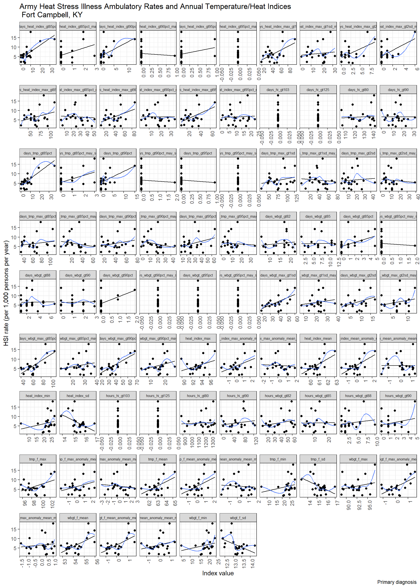

dmed_models
Annual models from DMED data.
Scope:
CONUS Army Installations:
Fort Jackson, SC
Fort Benning, GA
Fort Bragg, NC
Fort Campbell, KY
Fort Polk, LA
Fort Hood, TX
Fort Stewart, GA
Fort Leonard Wood, MO
Fort Riley, KS
Fort Irwin, CA
Fort Bliss, TX
Active-duty service members
Outcome: Ambulatory(Out-patient)
Rate of Heat Stress Illness (any type)
1997 - 2018
# Outcomes
dmed_tidy <-
read_rds("data/dmed_tidy.rds")
dmed_tidy## # A tibble: 11,010 x 9
## type category year count population rate location strata hsi
## <fct> <fct> <int> <dbl> <dbl> <dbl> <fct> <fct> <fct>
## 1 Ambulatory Data Male 1997 0 6057. 0 jackson gender hexhsa~
## 2 Ambulatory Data Female 1997 0 2749. 0 jackson gender hexhsa~
## 3 Ambulatory Data Total 1997 0 8806. 0 jackson gender hexhsa~
## 4 Hospitalizatio~ Male 1997 0 6057. 0 jackson gender hexhsa~
## 5 Hospitalizatio~ Female 1997 0 2749. 0 jackson gender hexhsa~
## 6 Hospitalizatio~ Total 1997 0 8806. 0 jackson gender hexhsa~
## 7 Reportable Eve~ Male 1997 0 6057. 0 jackson gender hexhsa~
## 8 Reportable Eve~ Female 1997 0 2749. 0 jackson gender hexhsa~
## 9 Reportable Eve~ Total 1997 0 8806. 0 jackson gender hexhsa~
## 10 Ambulatory Data Male 1998 0 6456. 0 jackson gender hexhsa~
## # ... with 11,000 more rows# Exposures
annual_tables_list <-
read_rds("data/annual_tables_list.rds")
annual_tables_list## # A tibble: 25 x 2
## # Groups: installation [25]
## installation data
## <chr> <list<df[,30]>>
## 1 eglin_afb [86 x 30]
## 2 fort_benning_ga [86 x 30]
## 3 fort_bliss [86 x 30]
## 4 fort_bragg [86 x 30]
## 5 fort_campbell [86 x 30]
## 6 fort_carson [86 x 30]
## 7 fort_drum [86 x 30]
## 8 fort_gordon [86 x 30]
## 9 fort_hood [86 x 30]
## 10 fort_jackson [86 x 30]
## # ... with 15 more rowsTable of HSI Ambulatory Rates
Ambulatory rates of any heat stress illness type (active-duty)
dmed_tidy <-
read_rds("data/dmed_tidy.rds")
dmed_tidy %>%
filter(!location %in% c("us", "overseas"),
type == "Ambulatory Data",
hsi == "all",
strata == "gender",
category == "Total") %>%
dplyr::select(location, year, rate) %>%
pivot_wider(., names_from = year, values_from = rate) %>%
knitr::kable(digits = 2) %>%
kable_styling(bootstrap_options = "striped", font_size = 10) %>%
scroll_box(width = "700px") | location | 1997 | 1998 | 1999 | 2000 | 2001 | 2002 | 2003 | 2004 | 2005 | 2006 | 2007 | 2008 | 2009 | 2010 | 2011 | 2012 | 2013 | 2014 | 2015 | 2016 | 2017 | 2018 |
|---|---|---|---|---|---|---|---|---|---|---|---|---|---|---|---|---|---|---|---|---|---|---|
| jackson | 0.91 | 2.47 | 1.63 | 6.87 | 8.11 | 8.71 | 9.17 | 8.02 | 15.53 | 10.75 | 19.58 | 34.88 | 18.43 | 41.61 | 70.93 | 55.37 | 40.01 | 30.89 | 22.58 | 60.01 | 57.61 | 61.43 |
| benning | 5.81 | 9.66 | 10.26 | 9.50 | 11.50 | 11.91 | 9.07 | 21.12 | 28.41 | 20.63 | 25.92 | 19.84 | 26.81 | 38.59 | 34.63 | 25.21 | 25.69 | 31.81 | 29.66 | 50.83 | 57.29 | 58.39 |
| bragg | 2.03 | 4.02 | 3.99 | 5.40 | 15.74 | 18.01 | 13.09 | 17.48 | 15.92 | 17.04 | 14.57 | 19.03 | 16.66 | 19.88 | 24.67 | 18.94 | 17.67 | 14.68 | 18.29 | 14.54 | 15.29 | 20.90 |
| campbell | 2.32 | 5.47 | 4.98 | 4.65 | 5.97 | 4.67 | 1.82 | 7.46 | 5.45 | 1.59 | 6.99 | 2.15 | 5.37 | 4.51 | 6.31 | 5.78 | 6.29 | 10.21 | 8.08 | 13.15 | 14.22 | 17.97 |
| polk | NA | NA | NA | NA | NA | NA | NA | NA | NA | 11.25 | 9.76 | 2.85 | 7.12 | 18.43 | 3.04 | 6.86 | 7.00 | 10.60 | 13.96 | NA | NA | NA |
| hood | NA | NA | NA | NA | NA | NA | NA | NA | NA | 2.14 | 2.46 | 1.67 | 0.79 | 3.46 | 1.78 | 3.85 | 2.79 | 2.34 | 3.77 | NA | NA | NA |
| stewart | NA | NA | NA | NA | NA | NA | NA | NA | NA | 4.72 | 4.29 | 3.91 | 6.70 | 2.42 | 7.48 | 4.08 | 2.55 | 7.24 | 6.96 | NA | NA | NA |
| leonardwood | NA | NA | NA | NA | NA | NA | NA | NA | NA | 2.98 | 2.29 | 2.08 | 2.41 | 12.09 | 7.39 | 7.01 | 6.46 | 4.56 | 6.37 | NA | NA | NA |
| riley | NA | NA | NA | NA | NA | NA | NA | NA | NA | 7.52 | 2.70 | 1.38 | 2.36 | 3.58 | 6.00 | 2.62 | 3.00 | 2.77 | 4.69 | NA | NA | NA |
| irwin | NA | NA | NA | NA | NA | NA | NA | NA | NA | 2.33 | 2.62 | 1.71 | 5.02 | 0.90 | 4.66 | 6.11 | 2.74 | 4.37 | 3.32 | NA | NA | NA |
| bliss | NA | NA | NA | NA | NA | NA | NA | NA | NA | 1.34 | 2.39 | 2.46 | 1.20 | 2.00 | 1.79 | 2.29 | 0.59 | 1.69 | 0.69 | NA | NA | NA |
(Jackson, Bragg, Campbell, Benning complete at present)
index_long <-
annual_tables_list %>%
filter(installation %in% c("fort_benning_ga", "fort_bragg", "fort_campbell", "fort_jackson")) %>%
unnest(data) %>%
pivot_longer(., cols = `1990`:`2018`, names_to = "year", values_to = "value") %>%
mutate(year = as.integer(year))
hsi_rates <-
dmed_tidy %>%
filter(location %in% c("benning", "bragg", "campbell", "jackson"),
type == "Ambulatory Data",
hsi == "all",
strata == "gender",
category == "Total") %>%
dplyr::select(location, year, rate) %>%
mutate(location = recode(location, jackson = "fort_jackson"),
location = recode(location, benning = "fort_benning_ga"),
location = recode(location, bragg = "fort_bragg"),
location = recode(location, campbell = "fort_campbell"),
location = as.character(location))
# Join table
joined_rate <-
index_long %>%
left_join(hsi_rates, by = c("installation" = "location", "year" = "year")) %>%
drop_na(rate)
joined_rate## # A tibble: 7,568 x 5
## # Groups: installation [4]
## installation index year value rate
## <chr> <chr> <int> <dbl> <dbl>
## 1 fort_benning_ga tmp_f_mean 1997 65.2 5.81
## 2 fort_benning_ga tmp_f_mean 1998 67.7 9.66
## 3 fort_benning_ga tmp_f_mean 1999 66.4 10.3
## 4 fort_benning_ga tmp_f_mean 2000 65.8 9.50
## 5 fort_benning_ga tmp_f_mean 2001 65.7 11.5
## 6 fort_benning_ga tmp_f_mean 2002 66.5 11.9
## 7 fort_benning_ga tmp_f_mean 2003 65.5 9.07
## 8 fort_benning_ga tmp_f_mean 2004 66.1 21.1
## 9 fort_benning_ga tmp_f_mean 2005 65.7 28.4
## 10 fort_benning_ga tmp_f_mean 2006 67.0 20.6
## # ... with 7,558 more rowsScatterplots of Temperature/Heat Index and HSI Rates
Each point represents a year from 1997 - 2018.
The back line is a linear regression and the blue curve is a loess smoothed conditional means curve.
joined_rate %>%
filter(installation == "fort_benning_ga") %>%
ggplot(aes(x = value, y = rate)) +
geom_point() +
geom_smooth(method = lm, se = FALSE, size = 0.5, color = "black") +
geom_smooth(se = FALSE, size = 0.5) +
facet_wrap(~ index, scales = "free_x") +
labs(
title = "Army Heat Stress Illness Ambulatory Rates and Annual Temperature/Heat Indices \n Fort Benning, GA",
x = "Index value",
y = "HSI rate (per 1,000 persons per year)",
caption = "Primary diagnosis"
) +
theme_bw() +
theme(strip.text = element_text(size = 6)) +
theme(axis.text.x = element_text(angle = 90, hjust = 1))## `geom_smooth()` using method = 'loess' and formula 'y ~ x'
joined_rate %>%
filter(installation == "fort_benning_ga") %>%
ggplot(aes(x = value, y = rate)) +
geom_point() +
geom_smooth(method = lm, se = FALSE, size = 0.5, color = "black") +
geom_smooth(se = FALSE, size = 0.5) +
facet_wrap(~ index, scales = "free_x") +
labs(
title = "Army Heat Stress Illness Ambulatory Rates and Annual Temperature/Heat Indices \n Fort Benning, GA",
x = "Index value",
y = "HSI rate (per 1,000 persons per year)",
caption = "Primary diagnosis"
) +
theme_bw() +
theme(strip.text = element_text(size = 6)) +
theme(axis.text.x = element_text(angle = 90, hjust = 1))## `geom_smooth()` using method = 'loess' and formula 'y ~ x'
joined_rate %>%
filter(installation == "fort_jackson") %>%
ggplot(aes(x = value, y = rate)) +
geom_point() +
geom_smooth(method = lm, se = FALSE, size = 0.5, color = "black") +
geom_smooth(se = FALSE, size = 0.5) +
facet_wrap(~ index, scales = "free_x") +
labs(
title = "Army Heat Stress Illness Ambulatory Rates and Annual Temperature/Heat Indices \n Fort Jackson, SC",
x = "Index value",
y = "HSI rate (per 1,000 persons per year)",
caption = "Primary diagnosis"
) +
theme_bw() +
theme(strip.text = element_text(size = 6)) +
theme(axis.text.x = element_text(angle = 90, hjust = 1))## `geom_smooth()` using method = 'loess' and formula 'y ~ x'
joined_rate %>%
filter(installation == "fort_campbell") %>%
ggplot(aes(x = value, y = rate)) +
geom_point() +
geom_smooth(method = lm, se = FALSE, size = 0.5, color = "black") +
geom_smooth(se = FALSE, size = 0.5) +
facet_wrap(~ index, scales = "free_x") +
labs(
title = "Army Heat Stress Illness Ambulatory Rates and Annual Temperature/Heat Indices \n Fort Campbell, KY",
x = "Index value",
y = "HSI rate (per 1,000 persons per year)",
caption = "Primary diagnosis"
) +
theme_bw() +
theme(strip.text = element_text(size = 6)) +
theme(axis.text.x = element_text(angle = 90, hjust = 1))## `geom_smooth()` using method = 'loess' and formula 'y ~ x'
Linear models
# Linear regression function
annual_lm = function(df) {
df %>%
lm(rate ~ value, data = .)
}
# Nest by each installation - index pair
annual_hsi_nest <-
joined_rate %>%
nest(data = year:rate) %>%
mutate(linear_models = map(data, annual_lm),
glance = map(linear_models, broom::glance),
tidy = map(linear_models, broom::glance))
annual_hsi_nest## # A tibble: 344 x 6
## # Groups: installation [4]
## installation index data linear_models glance tidy
## <chr> <chr> <list<df[,> <list> <list> <list>
## 1 fort_benning_~ tmp_f_mean [22 x 3] <lm> <tibble [1 ~ <tibble [1~
## 2 fort_benning_~ heat_index~ [22 x 3] <lm> <tibble [1 ~ <tibble [1~
## 3 fort_benning_~ wbgt_f_mean [22 x 3] <lm> <tibble [1 ~ <tibble [1~
## 4 fort_benning_~ tmp_f_max [22 x 3] <lm> <tibble [1 ~ <tibble [1~
## 5 fort_benning_~ heat_index~ [22 x 3] <lm> <tibble [1 ~ <tibble [1~
## 6 fort_benning_~ wbgt_f_max [22 x 3] <lm> <tibble [1 ~ <tibble [1~
## 7 fort_benning_~ tmp_f_min [22 x 3] <lm> <tibble [1 ~ <tibble [1~
## 8 fort_benning_~ heat_index~ [22 x 3] <lm> <tibble [1 ~ <tibble [1~
## 9 fort_benning_~ wbgt_f_min [22 x 3] <lm> <tibble [1 ~ <tibble [1~
## 10 fort_benning_~ tmp_f_sd [22 x 3] <lm> <tibble [1 ~ <tibble [1~
## # ... with 334 more rows# Model summaries
annual_hsi_nest %>%
unnest(glance) %>%
unnest(tidy, names_repair = "universal") %>%
dplyr::select(installation, index, statistic...8, r.squared...5, p.value...9, logLik...11) %>%
knitr::kable(digits = 4) %>%
kable_styling(bootstrap_options = "striped", font_size = 10) %>%
scroll_box(height = "700px")## New names:
## * r.squared -> r.squared...5
## * adj.r.squared -> adj.r.squared...6
## * sigma -> sigma...7
## * statistic -> statistic...8
## * p.value -> p.value...9
## * ... and 17 more problems| installation | index | statistic…8 | r.squared…5 | p.value…9 | logLik…11 |
|---|---|---|---|---|---|
| fort_benning_ga | tmp_f_mean | 3.5463 | 0.1506 | 0.0743 | -88.9053 |
| fort_benning_ga | heat_index_mean | 6.6330 | 0.2491 | 0.0181 | -87.5503 |
| fort_benning_ga | wbgt_f_mean | 3.3881 | 0.1449 | 0.0806 | -88.9795 |
| fort_benning_ga | tmp_f_max | 0.0707 | 0.0035 | 0.7930 | -90.6621 |
| fort_benning_ga | heat_index_max | 0.0088 | 0.0004 | 0.9264 | -90.6961 |
| fort_benning_ga | wbgt_f_max | 4.0243 | 0.1675 | 0.0586 | -88.6842 |
| fort_benning_ga | tmp_f_min | 0.5693 | 0.0277 | 0.4593 | -90.3922 |
| fort_benning_ga | heat_index_min | 0.5693 | 0.0277 | 0.4593 | -90.3922 |
| fort_benning_ga | wbgt_f_min | 0.3165 | 0.0156 | 0.5800 | -90.5282 |
| fort_benning_ga | tmp_f_sd | 0.8918 | 0.0427 | 0.3563 | -90.2211 |
| fort_benning_ga | heat_index_sd | 2.2523 | 0.1012 | 0.1490 | -89.5271 |
| fort_benning_ga | wbgt_f_sd | 1.0995 | 0.0521 | 0.3069 | -90.1122 |
| fort_benning_ga | days_hi_gt80 | 6.0220 | 0.2314 | 0.0234 | -87.8056 |
| fort_benning_ga | days_hi_gt90 | 9.0383 | 0.3113 | 0.0070 | -86.5992 |
| fort_benning_ga | days_hi_gt103 | 1.5564 | 0.0722 | 0.2266 | -89.8766 |
| fort_benning_ga | days_hi_gt125 | NA | 0.0000 | NA | -90.7009 |
| fort_benning_ga | days_wbgt_gt82 | 18.5328 | 0.4810 | 0.0003 | -83.4874 |
| fort_benning_ga | days_wbgt_gt85 | 17.0433 | 0.4601 | 0.0005 | -83.9210 |
| fort_benning_ga | days_wbgt_gt88 | 10.9763 | 0.3543 | 0.0035 | -85.8885 |
| fort_benning_ga | days_wbgt_gt90 | 7.6083 | 0.2756 | 0.0121 | -87.1547 |
| fort_benning_ga | hours_hi_gt80 | 9.4902 | 0.3218 | 0.0059 | -86.4293 |
| fort_benning_ga | hours_hi_gt90 | 8.5994 | 0.3007 | 0.0082 | -86.7667 |
| fort_benning_ga | hours_hi_gt103 | 1.1766 | 0.0556 | 0.2909 | -90.0721 |
| fort_benning_ga | hours_hi_gt125 | NA | 0.0000 | NA | -90.7009 |
| fort_benning_ga | hours_wbgt_gt82 | 17.1687 | 0.4619 | 0.0005 | -83.8838 |
| fort_benning_ga | hours_wbgt_gt85 | 13.2051 | 0.3977 | 0.0017 | -85.1242 |
| fort_benning_ga | hours_wbgt_gt88 | 5.9580 | 0.2295 | 0.0241 | -87.8327 |
| fort_benning_ga | hours_wbgt_gt90 | 3.9126 | 0.1636 | 0.0619 | -88.7355 |
| fort_benning_ga | tmp_f_mean_anomaly_mean | 3.5323 | 0.1501 | 0.0748 | -88.9118 |
| fort_benning_ga | heat_index_mean_anomaly_mean | 6.6233 | 0.2488 | 0.0181 | -87.5543 |
| fort_benning_ga | wbgt_f_mean_anomaly_mean | 3.3920 | 0.1450 | 0.0804 | -88.9777 |
| fort_benning_ga | tmp_f_max_anomaly_mean | 3.8305 | 0.1607 | 0.0644 | -88.7733 |
| fort_benning_ga | heat_index_max_anomaly_mean | 9.9979 | 0.3333 | 0.0049 | -86.2416 |
| fort_benning_ga | wbgt_f_max_anomaly_mean | 6.6339 | 0.2491 | 0.0181 | -87.5499 |
| fort_benning_ga | days_tmp_gt85pct | 2.5241 | 0.1121 | 0.1278 | -89.3935 |
| fort_benning_ga | days_tmp_gt90pct | 0.6873 | 0.0332 | 0.4169 | -90.3292 |
| fort_benning_ga | days_tmp_gt95pct | 2.7501 | 0.1209 | 0.1128 | -89.2837 |
| fort_benning_ga | days_heat_index_gt85pct | 4.5543 | 0.1855 | 0.0454 | -88.4442 |
| fort_benning_ga | days_heat_index_gt90pct | 0.7287 | 0.0352 | 0.4034 | -90.3072 |
| fort_benning_ga | days_heat_index_gt95pct | 5.1745 | 0.2055 | 0.0341 | -88.1698 |
| fort_benning_ga | days_wbgt_gt85pct | 2.4721 | 0.1100 | 0.1316 | -89.4189 |
| fort_benning_ga | days_wbgt_gt90pct | 2.6245 | 0.1160 | 0.1209 | -89.3446 |
| fort_benning_ga | days_wbgt_gt95pct | 2.1046 | 0.0952 | 0.1624 | -89.6003 |
| fort_benning_ga | days_tmp_max_gt85pct | 2.3995 | 0.1071 | 0.1371 | -89.4546 |
| fort_benning_ga | days_tmp_max_gt90pct | 1.9137 | 0.0873 | 0.1818 | -89.6958 |
| fort_benning_ga | days_tmp_max_gt95pct | 2.3660 | 0.1058 | 0.1397 | -89.4710 |
| fort_benning_ga | days_heat_index_max_gt85pct | 12.0740 | 0.3764 | 0.0024 | -85.5055 |
| fort_benning_ga | days_heat_index_max_gt90pct | 14.1651 | 0.4146 | 0.0012 | -84.8107 |
| fort_benning_ga | days_heat_index_max_gt95pct | 11.0576 | 0.3560 | 0.0034 | -85.8597 |
| fort_benning_ga | days_wbgt_max_gt85pct | 16.3056 | 0.4491 | 0.0006 | -84.1423 |
| fort_benning_ga | days_wbgt_max_gt90pct | 14.7751 | 0.4249 | 0.0010 | -84.6161 |
| fort_benning_ga | days_tmp_max_gt1sd | 3.5093 | 0.1493 | 0.0757 | -88.9226 |
| fort_benning_ga | days_heat_index_max_gt1sd | 15.4867 | 0.4364 | 0.0008 | -84.3932 |
| fort_benning_ga | days_wbgt_max_gt1sd | 20.5787 | 0.5071 | 0.0002 | -82.9183 |
| fort_benning_ga | days_tmp_max_gt2sd | 1.4382 | 0.0671 | 0.2445 | -89.9371 |
| fort_benning_ga | days_heat_index_max_gt2sd | 5.6872 | 0.2214 | 0.0271 | -87.9480 |
| fort_benning_ga | days_wbgt_max_gt2sd | 11.9867 | 0.3747 | 0.0025 | -85.5355 |
| fort_benning_ga | tmp_f_mean_anomaly_mean_may_sep | 4.1592 | 0.1722 | 0.0548 | -88.6227 |
| fort_benning_ga | heat_index_mean_anomaly_mean_may_sep | 7.7015 | 0.2780 | 0.0117 | -87.1176 |
| fort_benning_ga | wbgt_f_mean_anomaly_mean_may_sep | 9.7037 | 0.3267 | 0.0055 | -86.3500 |
| fort_benning_ga | tmp_f_max_anomaly_mean_may_sep | 2.1754 | 0.0981 | 0.1558 | -89.5652 |
| fort_benning_ga | heat_index_max_anomaly_mean_may_sep | 8.0607 | 0.2873 | 0.0101 | -86.9759 |
| fort_benning_ga | wbgt_f_max_anomaly_mean_may_sep | 14.0888 | 0.4133 | 0.0013 | -84.8353 |
| fort_benning_ga | days_tmp_gt85pct_may_sep | 0.2667 | 0.0132 | 0.6112 | -90.5552 |
| fort_benning_ga | days_tmp_gt90pct_may_sep | 0.0214 | 0.0011 | 0.8852 | -90.6892 |
| fort_benning_ga | days_tmp_gt95pct_may_sep | NA | 0.0000 | NA | -90.7009 |
| fort_benning_ga | days_heat_index_gt85pct_may_sep | 0.6675 | 0.0323 | 0.4236 | -90.3398 |
| fort_benning_ga | days_heat_index_gt90pct_may_sep | 0.2019 | 0.0100 | 0.6580 | -90.5904 |
| fort_benning_ga | days_heat_index_gt95pct_may_sep | 0.1024 | 0.0051 | 0.7523 | -90.6447 |
| fort_benning_ga | days_wbgt_gt85pct_may_sep | 1.4101 | 0.0659 | 0.2490 | -89.9515 |
| fort_benning_ga | days_wbgt_gt90pct_may_sep | 5.9720 | 0.2299 | 0.0239 | -87.8268 |
| fort_benning_ga | days_wbgt_gt95pct_may_sep | NA | 0.0000 | NA | -90.7009 |
| fort_benning_ga | days_tmp_max_gt85pct_may_sep | 0.5451 | 0.0265 | 0.4689 | -90.4051 |
| fort_benning_ga | days_tmp_max_gt90pct_may_sep | 0.2665 | 0.0131 | 0.6114 | -90.5553 |
| fort_benning_ga | days_tmp_max_gt95pct_may_sep | 0.2548 | 0.0126 | 0.6192 | -90.5616 |
| fort_benning_ga | days_heat_index_max_gt85pct_may_sep | 4.5331 | 0.1848 | 0.0459 | -88.4537 |
| fort_benning_ga | days_heat_index_max_gt90pct_may_sep | 2.8640 | 0.1253 | 0.1061 | -89.2288 |
| fort_benning_ga | days_heat_index_max_gt95pct_may_sep | 3.1955 | 0.1378 | 0.0890 | -89.0704 |
| fort_benning_ga | days_wbgt_max_gt85pct_may_sep | 11.2851 | 0.3607 | 0.0031 | -85.7794 |
| fort_benning_ga | days_wbgt_max_gt90pct_may_sep | 9.9925 | 0.3332 | 0.0049 | -86.2435 |
| fort_benning_ga | days_tmp_max_gt1sd_may_sep | 1.0199 | 0.0485 | 0.3246 | -90.1538 |
| fort_benning_ga | days_heat_index_max_gt1sd_may_sep | 5.9133 | 0.2282 | 0.0245 | -87.8517 |
| fort_benning_ga | days_wbgt_max_gt1sd_may_sep | 13.4013 | 0.4012 | 0.0016 | -85.0594 |
| fort_benning_ga | days_tmp_max_gt2sd_may_sep | 0.3787 | 0.0186 | 0.5452 | -90.4946 |
| fort_benning_ga | days_heat_index_max_gt2sd_may_sep | 1.5750 | 0.0730 | 0.2239 | -89.8671 |
| fort_benning_ga | days_wbgt_max_gt2sd_may_sep | 8.6059 | 0.3008 | 0.0082 | -86.7642 |
| fort_bragg | tmp_f_mean | 0.1187 | 0.0059 | 0.7340 | -69.6914 |
| fort_bragg | heat_index_mean | 0.3470 | 0.0171 | 0.5624 | -69.5673 |
| fort_bragg | wbgt_f_mean | 0.0587 | 0.0029 | 0.8110 | -69.7242 |
| fort_bragg | tmp_f_max | 0.0413 | 0.0021 | 0.8410 | -69.7338 |
| fort_bragg | heat_index_max | 0.3879 | 0.0190 | 0.5404 | -69.5452 |
| fort_bragg | wbgt_f_max | 0.4313 | 0.0211 | 0.5189 | -69.5218 |
| fort_bragg | tmp_f_min | 0.0196 | 0.0010 | 0.8901 | -69.7457 |
| fort_bragg | heat_index_min | 0.0196 | 0.0010 | 0.8901 | -69.7457 |
| fort_bragg | wbgt_f_min | 0.0109 | 0.0005 | 0.9179 | -69.7505 |
| fort_bragg | tmp_f_sd | 1.7455 | 0.0803 | 0.2014 | -68.8360 |
| fort_bragg | heat_index_sd | 2.5530 | 0.1132 | 0.1258 | -68.4350 |
| fort_bragg | wbgt_f_sd | 2.3499 | 0.1051 | 0.1410 | -68.5345 |
| fort_bragg | days_hi_gt80 | 2.9581 | 0.1288 | 0.1009 | -68.2392 |
| fort_bragg | days_hi_gt90 | 1.4871 | 0.0692 | 0.2369 | -68.9676 |
| fort_bragg | days_hi_gt103 | 1.1227 | 0.0532 | 0.3020 | -69.1557 |
| fort_bragg | days_hi_gt125 | NA | 0.0000 | NA | -69.7565 |
| fort_bragg | days_wbgt_gt82 | 1.1685 | 0.0552 | 0.2926 | -69.1319 |
| fort_bragg | days_wbgt_gt85 | 0.8583 | 0.0411 | 0.3653 | -69.2943 |
| fort_bragg | days_wbgt_gt88 | 0.7936 | 0.0382 | 0.3836 | -69.3284 |
| fort_bragg | days_wbgt_gt90 | 0.9325 | 0.0445 | 0.3458 | -69.2552 |
| fort_bragg | hours_hi_gt80 | 1.4685 | 0.0684 | 0.2397 | -68.9771 |
| fort_bragg | hours_hi_gt90 | 1.6137 | 0.0747 | 0.2185 | -68.9029 |
| fort_bragg | hours_hi_gt103 | 1.1705 | 0.0553 | 0.2922 | -69.1308 |
| fort_bragg | hours_hi_gt125 | NA | 0.0000 | NA | -69.7565 |
| fort_bragg | hours_wbgt_gt82 | 1.0886 | 0.0516 | 0.3092 | -69.1735 |
| fort_bragg | hours_wbgt_gt85 | 1.1393 | 0.0539 | 0.2985 | -69.1470 |
| fort_bragg | hours_wbgt_gt88 | 0.5665 | 0.0275 | 0.4604 | -69.4492 |
| fort_bragg | hours_wbgt_gt90 | 1.3023 | 0.0611 | 0.2673 | -69.0626 |
| fort_bragg | tmp_f_mean_anomaly_mean | 0.1188 | 0.0059 | 0.7339 | -69.6913 |
| fort_bragg | heat_index_mean_anomaly_mean | 0.3472 | 0.0171 | 0.5623 | -69.5672 |
| fort_bragg | wbgt_f_mean_anomaly_mean | 0.0588 | 0.0029 | 0.8108 | -69.7242 |
| fort_bragg | tmp_f_max_anomaly_mean | 0.5418 | 0.0264 | 0.4702 | -69.4624 |
| fort_bragg | heat_index_max_anomaly_mean | 1.1394 | 0.0539 | 0.2985 | -69.1470 |
| fort_bragg | wbgt_f_max_anomaly_mean | 0.2280 | 0.0113 | 0.6382 | -69.6318 |
| fort_bragg | days_tmp_gt85pct | 0.1876 | 0.0093 | 0.6696 | -69.6538 |
| fort_bragg | days_tmp_gt90pct | 0.2136 | 0.0106 | 0.6490 | -69.6396 |
| fort_bragg | days_tmp_gt95pct | 1.7415 | 0.0801 | 0.2019 | -68.8381 |
| fort_bragg | days_heat_index_gt85pct | 0.7695 | 0.0370 | 0.3908 | -69.3412 |
| fort_bragg | days_heat_index_gt90pct | 0.7703 | 0.0371 | 0.3905 | -69.3408 |
| fort_bragg | days_heat_index_gt95pct | 1.6638 | 0.0768 | 0.2118 | -68.8775 |
| fort_bragg | days_wbgt_gt85pct | 0.9458 | 0.0452 | 0.3424 | -69.2482 |
| fort_bragg | days_wbgt_gt90pct | 0.5391 | 0.0262 | 0.4713 | -69.4639 |
| fort_bragg | days_wbgt_gt95pct | 1.4745 | 0.0687 | 0.2388 | -68.9740 |
| fort_bragg | days_tmp_max_gt85pct | 0.7043 | 0.0340 | 0.4113 | -69.3758 |
| fort_bragg | days_tmp_max_gt90pct | 0.7600 | 0.0366 | 0.3937 | -69.3462 |
| fort_bragg | days_tmp_max_gt95pct | 1.0008 | 0.0477 | 0.3291 | -69.2194 |
| fort_bragg | days_heat_index_max_gt85pct | 1.7201 | 0.0792 | 0.2045 | -68.8489 |
| fort_bragg | days_heat_index_max_gt90pct | 1.9279 | 0.0879 | 0.1803 | -68.7442 |
| fort_bragg | days_heat_index_max_gt95pct | 2.0804 | 0.0942 | 0.1647 | -68.6679 |
| fort_bragg | days_wbgt_max_gt85pct | 1.0434 | 0.0496 | 0.3192 | -69.1971 |
| fort_bragg | days_wbgt_max_gt90pct | 1.5525 | 0.0720 | 0.2272 | -68.9341 |
| fort_bragg | days_tmp_max_gt1sd | 0.8617 | 0.0413 | 0.3643 | -69.2925 |
| fort_bragg | days_heat_index_max_gt1sd | 1.1648 | 0.0550 | 0.2933 | -69.1338 |
| fort_bragg | days_wbgt_max_gt1sd | 0.7210 | 0.0348 | 0.4059 | -69.3669 |
| fort_bragg | days_tmp_max_gt2sd | 0.8027 | 0.0386 | 0.3810 | -69.3236 |
| fort_bragg | days_heat_index_max_gt2sd | 1.5408 | 0.0715 | 0.2289 | -68.9401 |
| fort_bragg | days_wbgt_max_gt2sd | 1.5097 | 0.0702 | 0.2335 | -68.9560 |
| fort_bragg | tmp_f_mean_anomaly_mean_may_sep | 0.9919 | 0.0473 | 0.3312 | -69.2240 |
| fort_bragg | heat_index_mean_anomaly_mean_may_sep | 1.4155 | 0.0661 | 0.2481 | -69.0043 |
| fort_bragg | wbgt_f_mean_anomaly_mean_may_sep | 1.1483 | 0.0543 | 0.2967 | -69.1424 |
| fort_bragg | tmp_f_max_anomaly_mean_may_sep | 0.9825 | 0.0468 | 0.3334 | -69.2289 |
| fort_bragg | heat_index_max_anomaly_mean_may_sep | 2.0349 | 0.0924 | 0.1691 | -68.6906 |
| fort_bragg | wbgt_f_max_anomaly_mean_may_sep | 1.2555 | 0.0591 | 0.2758 | -69.0868 |
| fort_bragg | days_tmp_gt85pct_may_sep | 0.0052 | 0.0003 | 0.9432 | -69.7536 |
| fort_bragg | days_tmp_gt90pct_may_sep | 0.0037 | 0.0002 | 0.9521 | -69.7544 |
| fort_bragg | days_tmp_gt95pct_may_sep | 0.0032 | 0.0002 | 0.9557 | -69.7547 |
| fort_bragg | days_heat_index_gt85pct_may_sep | 0.5139 | 0.0251 | 0.4818 | -69.4774 |
| fort_bragg | days_heat_index_gt90pct_may_sep | 0.1727 | 0.0086 | 0.6821 | -69.6619 |
| fort_bragg | days_heat_index_gt95pct_may_sep | 0.0465 | 0.0023 | 0.8314 | -69.7309 |
| fort_bragg | days_wbgt_gt85pct_may_sep | 0.4120 | 0.0202 | 0.5282 | -69.5322 |
| fort_bragg | days_wbgt_gt90pct_may_sep | 1.3820 | 0.0646 | 0.2536 | -69.0215 |
| fort_bragg | days_wbgt_gt95pct_may_sep | 4.0844 | 0.1696 | 0.0569 | -67.7123 |
| fort_bragg | days_tmp_max_gt85pct_may_sep | 0.7006 | 0.0338 | 0.4125 | -69.3777 |
| fort_bragg | days_tmp_max_gt90pct_may_sep | 0.5768 | 0.0280 | 0.4564 | -69.4437 |
| fort_bragg | days_tmp_max_gt95pct_may_sep | 1.1281 | 0.0534 | 0.3008 | -69.1529 |
| fort_bragg | days_heat_index_max_gt85pct_may_sep | 1.6654 | 0.0769 | 0.2116 | -68.8766 |
| fort_bragg | days_heat_index_max_gt90pct_may_sep | 1.5170 | 0.0705 | 0.2324 | -68.9522 |
| fort_bragg | days_heat_index_max_gt95pct_may_sep | 1.4659 | 0.0683 | 0.2401 | -68.9784 |
| fort_bragg | days_wbgt_max_gt85pct_may_sep | 1.0405 | 0.0495 | 0.3199 | -69.1986 |
| fort_bragg | days_wbgt_max_gt90pct_may_sep | 1.1599 | 0.0548 | 0.2943 | -69.1363 |
| fort_bragg | days_tmp_max_gt1sd_may_sep | 1.1098 | 0.0526 | 0.3047 | -69.1624 |
| fort_bragg | days_heat_index_max_gt1sd_may_sep | 1.6070 | 0.0744 | 0.2195 | -68.9063 |
| fort_bragg | days_wbgt_max_gt1sd_may_sep | 0.9844 | 0.0469 | 0.3330 | -69.2279 |
| fort_bragg | days_tmp_max_gt2sd_may_sep | 0.4898 | 0.0239 | 0.4921 | -69.4904 |
| fort_bragg | days_heat_index_max_gt2sd_may_sep | 0.9721 | 0.0464 | 0.3359 | -69.2344 |
| fort_bragg | days_wbgt_max_gt2sd_may_sep | 1.1508 | 0.0544 | 0.2962 | -69.1411 |
| fort_campbell | tmp_f_mean | 6.2119 | 0.2370 | 0.0216 | -58.7541 |
| fort_campbell | heat_index_mean | 9.5056 | 0.3222 | 0.0059 | -57.4521 |
| fort_campbell | wbgt_f_mean | 12.2157 | 0.3792 | 0.0023 | -56.4855 |
| fort_campbell | tmp_f_max | 3.4672 | 0.1477 | 0.0774 | -59.9708 |
| fort_campbell | heat_index_max | 2.1704 | 0.0979 | 0.1563 | -60.5961 |
| fort_campbell | wbgt_f_max | 1.2462 | 0.0587 | 0.2775 | -61.0645 |
| fort_campbell | tmp_f_min | 0.9200 | 0.0440 | 0.3489 | -61.2347 |
| fort_campbell | heat_index_min | 0.9200 | 0.0440 | 0.3489 | -61.2347 |
| fort_campbell | wbgt_f_min | 0.9334 | 0.0446 | 0.3455 | -61.2277 |
| fort_campbell | tmp_f_sd | 4.2603 | 0.1756 | 0.0522 | -59.6052 |
| fort_campbell | heat_index_sd | 5.0232 | 0.2007 | 0.0365 | -59.2646 |
| fort_campbell | wbgt_f_sd | 4.9947 | 0.1998 | 0.0370 | -59.2772 |
| fort_campbell | days_hi_gt80 | 0.1061 | 0.0053 | 0.7480 | -61.6712 |
| fort_campbell | days_hi_gt90 | 0.0001 | 0.0000 | 0.9941 | -61.7294 |
| fort_campbell | days_hi_gt103 | NA | 0.0000 | NA | -61.7294 |
| fort_campbell | days_hi_gt125 | NA | 0.0000 | NA | -61.7294 |
| fort_campbell | days_wbgt_gt82 | 0.3586 | 0.0176 | 0.5560 | -61.5339 |
| fort_campbell | days_wbgt_gt85 | 0.0058 | 0.0003 | 0.9400 | -61.7262 |
| fort_campbell | days_wbgt_gt88 | 0.0067 | 0.0003 | 0.9358 | -61.7258 |
| fort_campbell | days_wbgt_gt90 | 0.0241 | 0.0012 | 0.8782 | -61.7162 |
| fort_campbell | hours_hi_gt80 | 0.0658 | 0.0033 | 0.8001 | -61.6933 |
| fort_campbell | hours_hi_gt90 | 0.5185 | 0.0253 | 0.4798 | -61.4479 |
| fort_campbell | hours_hi_gt103 | NA | 0.0000 | NA | -61.7294 |
| fort_campbell | hours_hi_gt125 | NA | 0.0000 | NA | -61.7294 |
| fort_campbell | hours_wbgt_gt82 | 1.1720 | 0.0554 | 0.2919 | -61.1030 |
| fort_campbell | hours_wbgt_gt85 | 0.0045 | 0.0002 | 0.9472 | -61.7269 |
| fort_campbell | hours_wbgt_gt88 | 0.4244 | 0.0208 | 0.5222 | -61.4984 |
| fort_campbell | hours_wbgt_gt90 | 1.0904 | 0.0517 | 0.3088 | -61.1455 |
| fort_campbell | tmp_f_mean_anomaly_mean | 6.2154 | 0.2371 | 0.0215 | -58.7526 |
| fort_campbell | heat_index_mean_anomaly_mean | 9.5212 | 0.3225 | 0.0058 | -57.4463 |
| fort_campbell | wbgt_f_mean_anomaly_mean | 12.2609 | 0.3801 | 0.0022 | -56.4701 |
| fort_campbell | tmp_f_max_anomaly_mean | 2.0279 | 0.0921 | 0.1698 | -60.6670 |
| fort_campbell | heat_index_max_anomaly_mean | 4.1987 | 0.1735 | 0.0538 | -59.6332 |
| fort_campbell | wbgt_f_max_anomaly_mean | 10.6015 | 0.3464 | 0.0040 | -57.0509 |
| fort_campbell | days_tmp_gt85pct | 19.9443 | 0.4993 | 0.0002 | -54.1201 |
| fort_campbell | days_tmp_gt90pct | 5.5880 | 0.2184 | 0.0283 | -59.0191 |
| fort_campbell | days_tmp_gt95pct | 0.0913 | 0.0045 | 0.7657 | -61.6793 |
| fort_campbell | days_heat_index_gt85pct | 15.7313 | 0.4403 | 0.0008 | -55.3462 |
| fort_campbell | days_heat_index_gt90pct | 7.3599 | 0.2690 | 0.0134 | -58.2826 |
| fort_campbell | days_heat_index_gt95pct | 1.3562 | 0.0635 | 0.2579 | -61.0077 |
| fort_campbell | days_wbgt_gt85pct | 4.8370 | 0.1948 | 0.0398 | -59.3468 |
| fort_campbell | days_wbgt_gt90pct | 4.3069 | 0.1772 | 0.0511 | -59.5841 |
| fort_campbell | days_wbgt_gt95pct | NA | 0.0000 | NA | -61.7294 |
| fort_campbell | days_tmp_max_gt85pct | 0.4782 | 0.0233 | 0.4972 | -61.4695 |
| fort_campbell | days_tmp_max_gt90pct | 0.9151 | 0.0438 | 0.3502 | -61.2373 |
| fort_campbell | days_tmp_max_gt95pct | 2.0369 | 0.0924 | 0.1689 | -60.6625 |
| fort_campbell | days_heat_index_max_gt85pct | 2.0057 | 0.0911 | 0.1721 | -60.6782 |
| fort_campbell | days_heat_index_max_gt90pct | 3.6778 | 0.1553 | 0.0695 | -59.8726 |
| fort_campbell | days_heat_index_max_gt95pct | 5.1102 | 0.2035 | 0.0351 | -59.2265 |
| fort_campbell | days_wbgt_max_gt85pct | 20.7607 | 0.5093 | 0.0002 | -53.8976 |
| fort_campbell | days_wbgt_max_gt90pct | 15.3717 | 0.4346 | 0.0008 | -55.4574 |
| fort_campbell | days_tmp_max_gt1sd | 1.1402 | 0.0539 | 0.2983 | -61.1195 |
| fort_campbell | days_heat_index_max_gt1sd | 7.6272 | 0.2761 | 0.0120 | -58.1757 |
| fort_campbell | days_wbgt_max_gt1sd | 6.3864 | 0.2420 | 0.0200 | -58.6811 |
| fort_campbell | days_tmp_max_gt2sd | 0.1354 | 0.0067 | 0.7168 | -61.6552 |
| fort_campbell | days_heat_index_max_gt2sd | 8.3247 | 0.2939 | 0.0092 | -57.9014 |
| fort_campbell | days_wbgt_max_gt2sd | 2.7797 | 0.1220 | 0.1110 | -60.2979 |
| fort_campbell | tmp_f_mean_anomaly_mean_may_sep | 0.1071 | 0.0053 | 0.7469 | -61.6707 |
| fort_campbell | heat_index_mean_anomaly_mean_may_sep | 0.0006 | 0.0000 | 0.9803 | -61.7291 |
| fort_campbell | wbgt_f_mean_anomaly_mean_may_sep | 1.3433 | 0.0629 | 0.2601 | -61.0143 |
| fort_campbell | tmp_f_max_anomaly_mean_may_sep | 0.2492 | 0.0123 | 0.6231 | -61.5932 |
| fort_campbell | heat_index_max_anomaly_mean_may_sep | 0.0658 | 0.0033 | 0.8002 | -61.6933 |
| fort_campbell | wbgt_f_max_anomaly_mean_may_sep | 0.2802 | 0.0138 | 0.6024 | -61.5764 |
| fort_campbell | days_tmp_gt85pct_may_sep | 4.8595 | 0.1955 | 0.0394 | -59.3368 |
| fort_campbell | days_tmp_gt90pct_may_sep | 0.0796 | 0.0040 | 0.7807 | -61.6857 |
| fort_campbell | days_tmp_gt95pct_may_sep | NA | 0.0000 | NA | -61.7294 |
| fort_campbell | days_heat_index_gt85pct_may_sep | 3.7177 | 0.1567 | 0.0682 | -59.8540 |
| fort_campbell | days_heat_index_gt90pct_may_sep | 0.0796 | 0.0040 | 0.7807 | -61.6857 |
| fort_campbell | days_heat_index_gt95pct_may_sep | NA | 0.0000 | NA | -61.7294 |
| fort_campbell | days_wbgt_gt85pct_may_sep | 0.0796 | 0.0040 | 0.7807 | -61.6857 |
| fort_campbell | days_wbgt_gt90pct_may_sep | NA | 0.0000 | NA | -61.7294 |
| fort_campbell | days_wbgt_gt95pct_may_sep | NA | 0.0000 | NA | -61.7294 |
| fort_campbell | days_tmp_max_gt85pct_may_sep | 0.6094 | 0.0296 | 0.4442 | -61.3993 |
| fort_campbell | days_tmp_max_gt90pct_may_sep | 0.9198 | 0.0440 | 0.3490 | -61.2348 |
| fort_campbell | days_tmp_max_gt95pct_may_sep | 0.0813 | 0.0040 | 0.7785 | -61.6848 |
| fort_campbell | days_heat_index_max_gt85pct_may_sep | 0.0634 | 0.0032 | 0.8037 | -61.6946 |
| fort_campbell | days_heat_index_max_gt90pct_may_sep | 0.0000 | 0.0000 | 0.9999 | -61.7294 |
| fort_campbell | days_heat_index_max_gt95pct_may_sep | 0.0481 | 0.0024 | 0.8287 | -61.7030 |
| fort_campbell | days_wbgt_max_gt85pct_may_sep | 0.8464 | 0.0406 | 0.3685 | -61.2735 |
| fort_campbell | days_wbgt_max_gt90pct_may_sep | 1.7357 | 0.0799 | 0.2026 | -60.8140 |
| fort_campbell | days_tmp_max_gt1sd_may_sep | 0.1642 | 0.0081 | 0.6896 | -61.6395 |
| fort_campbell | days_heat_index_max_gt1sd_may_sep | 0.2387 | 0.0118 | 0.6305 | -61.5989 |
| fort_campbell | days_wbgt_max_gt1sd_may_sep | 0.3713 | 0.0182 | 0.5492 | -61.5271 |
| fort_campbell | days_tmp_max_gt2sd_may_sep | 0.1888 | 0.0094 | 0.6686 | -61.6261 |
| fort_campbell | days_heat_index_max_gt2sd_may_sep | 8.0543 | 0.2871 | 0.0102 | -58.0069 |
| fort_campbell | days_wbgt_max_gt2sd_may_sep | 1.2284 | 0.0579 | 0.2809 | -61.0738 |
| fort_jackson | tmp_f_mean | 5.3704 | 0.2117 | 0.0312 | -96.6030 |
| fort_jackson | heat_index_mean | 4.7148 | 0.1908 | 0.0421 | -96.8910 |
| fort_jackson | wbgt_f_mean | 0.8482 | 0.0407 | 0.3680 | -98.7624 |
| fort_jackson | tmp_f_max | 8.1874 | 0.2905 | 0.0097 | -95.4448 |
| fort_jackson | heat_index_max | 4.7926 | 0.1933 | 0.0406 | -96.8564 |
| fort_jackson | wbgt_f_max | 1.1620 | 0.0549 | 0.2939 | -98.5981 |
| fort_jackson | tmp_f_min | 0.2327 | 0.0115 | 0.6348 | -99.0921 |
| fort_jackson | heat_index_min | 0.2327 | 0.0115 | 0.6348 | -99.0921 |
| fort_jackson | wbgt_f_min | 0.3182 | 0.0157 | 0.5789 | -99.0457 |
| fort_jackson | tmp_f_sd | 2.8318 | 0.1240 | 0.1080 | -97.7627 |
| fort_jackson | heat_index_sd | 2.7107 | 0.1194 | 0.1153 | -97.8212 |
| fort_jackson | wbgt_f_sd | 0.6388 | 0.0310 | 0.4335 | -98.8735 |
| fort_jackson | days_hi_gt80 | 16.7544 | 0.4558 | 0.0006 | -92.5255 |
| fort_jackson | days_hi_gt90 | 4.8162 | 0.1941 | 0.0402 | -96.8459 |
| fort_jackson | days_hi_gt103 | 5.4102 | 0.2129 | 0.0306 | -96.5857 |
| fort_jackson | days_hi_gt125 | NA | 0.0000 | NA | -99.2193 |
| fort_jackson | days_wbgt_gt82 | 4.6662 | 0.1892 | 0.0431 | -96.9126 |
| fort_jackson | days_wbgt_gt85 | 9.3308 | 0.3181 | 0.0063 | -95.0074 |
| fort_jackson | days_wbgt_gt88 | 3.5247 | 0.1498 | 0.0751 | -97.4338 |
| fort_jackson | days_wbgt_gt90 | 1.9645 | 0.0894 | 0.1764 | -98.1887 |
| fort_jackson | hours_hi_gt80 | 11.6470 | 0.3680 | 0.0028 | -94.1713 |
| fort_jackson | hours_hi_gt90 | 9.0096 | 0.3106 | 0.0071 | -95.1285 |
| fort_jackson | hours_hi_gt103 | 7.3631 | 0.2691 | 0.0134 | -95.7712 |
| fort_jackson | hours_hi_gt125 | NA | 0.0000 | NA | -99.2193 |
| fort_jackson | hours_wbgt_gt82 | 5.6666 | 0.2208 | 0.0273 | -96.4753 |
| fort_jackson | hours_wbgt_gt85 | 6.7565 | 0.2525 | 0.0172 | -96.0178 |
| fort_jackson | hours_wbgt_gt88 | 4.3285 | 0.1779 | 0.0505 | -97.0642 |
| fort_jackson | hours_wbgt_gt90 | 4.5976 | 0.1869 | 0.0445 | -96.9432 |
| fort_jackson | tmp_f_mean_anomaly_mean | 5.3796 | 0.2120 | 0.0311 | -96.5990 |
| fort_jackson | heat_index_mean_anomaly_mean | 4.7283 | 0.1912 | 0.0418 | -96.8849 |
| fort_jackson | wbgt_f_mean_anomaly_mean | 0.8566 | 0.0411 | 0.3657 | -98.7580 |
| fort_jackson | tmp_f_max_anomaly_mean | 9.1037 | 0.3128 | 0.0068 | -95.0929 |
| fort_jackson | heat_index_max_anomaly_mean | 8.2612 | 0.2923 | 0.0094 | -95.4160 |
| fort_jackson | wbgt_f_max_anomaly_mean | 2.4407 | 0.1088 | 0.1339 | -97.9527 |
| fort_jackson | days_tmp_gt85pct | 7.4198 | 0.2706 | 0.0131 | -95.7485 |
| fort_jackson | days_tmp_gt90pct | 5.9288 | 0.2287 | 0.0244 | -96.3635 |
| fort_jackson | days_tmp_gt95pct | 2.4225 | 0.1080 | 0.1353 | -97.9617 |
| fort_jackson | days_heat_index_gt85pct | 3.9779 | 0.1659 | 0.0599 | -97.2239 |
| fort_jackson | days_heat_index_gt90pct | 4.0435 | 0.1682 | 0.0580 | -97.1939 |
| fort_jackson | days_heat_index_gt95pct | 1.3067 | 0.0613 | 0.2665 | -98.5231 |
| fort_jackson | days_wbgt_gt85pct | 2.4023 | 0.1072 | 0.1368 | -97.9716 |
| fort_jackson | days_wbgt_gt90pct | 0.9763 | 0.0465 | 0.3349 | -98.6951 |
| fort_jackson | days_wbgt_gt95pct | 0.8528 | 0.0409 | 0.3668 | -98.7600 |
| fort_jackson | days_tmp_max_gt85pct | 7.7893 | 0.2803 | 0.0113 | -95.6012 |
| fort_jackson | days_tmp_max_gt90pct | 8.6581 | 0.3021 | 0.0081 | -95.2626 |
| fort_jackson | days_tmp_max_gt95pct | 9.3818 | 0.3193 | 0.0061 | -94.9882 |
| fort_jackson | days_heat_index_max_gt85pct | 9.5144 | 0.3224 | 0.0058 | -94.9387 |
| fort_jackson | days_heat_index_max_gt90pct | 11.2384 | 0.3598 | 0.0032 | -94.3142 |
| fort_jackson | days_heat_index_max_gt95pct | 9.2925 | 0.3172 | 0.0063 | -95.0217 |
| fort_jackson | days_wbgt_max_gt85pct | 4.5069 | 0.1839 | 0.0464 | -96.9839 |
| fort_jackson | days_wbgt_max_gt90pct | 5.3130 | 0.2099 | 0.0320 | -96.6279 |
| fort_jackson | days_tmp_max_gt1sd | 9.5806 | 0.3239 | 0.0057 | -94.9141 |
| fort_jackson | days_heat_index_max_gt1sd | 9.0892 | 0.3125 | 0.0068 | -95.0983 |
| fort_jackson | days_wbgt_max_gt1sd | 4.7448 | 0.1917 | 0.0415 | -96.8776 |
| fort_jackson | days_tmp_max_gt2sd | 8.1505 | 0.2895 | 0.0098 | -95.4592 |
| fort_jackson | days_heat_index_max_gt2sd | 14.8223 | 0.4257 | 0.0010 | -93.1195 |
| fort_jackson | days_wbgt_max_gt2sd | 7.3821 | 0.2696 | 0.0133 | -95.7636 |
| fort_jackson | tmp_f_mean_anomaly_mean_may_sep | 9.7788 | 0.3284 | 0.0053 | -94.8406 |
| fort_jackson | heat_index_mean_anomaly_mean_may_sep | 8.3757 | 0.2952 | 0.0090 | -95.3715 |
| fort_jackson | wbgt_f_mean_anomaly_mean_may_sep | 2.0320 | 0.0922 | 0.1694 | -98.1549 |
| fort_jackson | tmp_f_max_anomaly_mean_may_sep | 10.6864 | 0.3482 | 0.0038 | -94.5104 |
| fort_jackson | heat_index_max_anomaly_mean_may_sep | 10.6426 | 0.3473 | 0.0039 | -94.5261 |
| fort_jackson | wbgt_f_max_anomaly_mean_may_sep | 5.1495 | 0.2048 | 0.0345 | -96.6992 |
| fort_jackson | days_tmp_gt85pct_may_sep | 14.8131 | 0.4255 | 0.0010 | -93.1224 |
| fort_jackson | days_tmp_gt90pct_may_sep | 14.0414 | 0.4125 | 0.0013 | -93.3690 |
| fort_jackson | days_tmp_gt95pct_may_sep | 7.2035 | 0.2648 | 0.0143 | -95.8356 |
| fort_jackson | days_heat_index_gt85pct_may_sep | 12.4329 | 0.3833 | 0.0021 | -93.9015 |
| fort_jackson | days_heat_index_gt90pct_may_sep | 13.9629 | 0.4111 | 0.0013 | -93.3944 |
| fort_jackson | days_heat_index_gt95pct_may_sep | 1.7710 | 0.0813 | 0.1982 | -98.2860 |
| fort_jackson | days_wbgt_gt85pct_may_sep | 4.8877 | 0.1964 | 0.0389 | -96.8143 |
| fort_jackson | days_wbgt_gt90pct_may_sep | 0.6107 | 0.0296 | 0.4437 | -98.8885 |
| fort_jackson | days_wbgt_gt95pct_may_sep | 1.9651 | 0.0895 | 0.1763 | -98.1884 |
| fort_jackson | days_tmp_max_gt85pct_may_sep | 7.8716 | 0.2824 | 0.0109 | -95.5687 |
| fort_jackson | days_tmp_max_gt90pct_may_sep | 8.0701 | 0.2875 | 0.0101 | -95.4906 |
| fort_jackson | days_tmp_max_gt95pct_may_sep | 8.5337 | 0.2991 | 0.0084 | -95.3104 |
| fort_jackson | days_heat_index_max_gt85pct_may_sep | 11.2895 | 0.3608 | 0.0031 | -94.2963 |
| fort_jackson | days_heat_index_max_gt90pct_may_sep | 9.9013 | 0.3311 | 0.0051 | -94.7954 |
| fort_jackson | days_heat_index_max_gt95pct_may_sep | 8.1673 | 0.2900 | 0.0097 | -95.4526 |
| fort_jackson | days_wbgt_max_gt85pct_may_sep | 8.7657 | 0.3047 | 0.0077 | -95.2213 |
| fort_jackson | days_wbgt_max_gt90pct_may_sep | 4.0826 | 0.1695 | 0.0569 | -97.1760 |
| fort_jackson | days_tmp_max_gt1sd_may_sep | 10.2959 | 0.3398 | 0.0044 | -94.6512 |
| fort_jackson | days_heat_index_max_gt1sd_may_sep | 9.0982 | 0.3127 | 0.0068 | -95.0949 |
| fort_jackson | days_wbgt_max_gt1sd_may_sep | 7.0764 | 0.2613 | 0.0150 | -95.8871 |
| fort_jackson | days_tmp_max_gt2sd_may_sep | 7.0154 | 0.2597 | 0.0154 | -95.9119 |
| fort_jackson | days_heat_index_max_gt2sd_may_sep | 13.1406 | 0.3965 | 0.0017 | -93.6640 |
| fort_jackson | days_wbgt_max_gt2sd_may_sep | 14.4919 | 0.4202 | 0.0011 | -93.2244 |